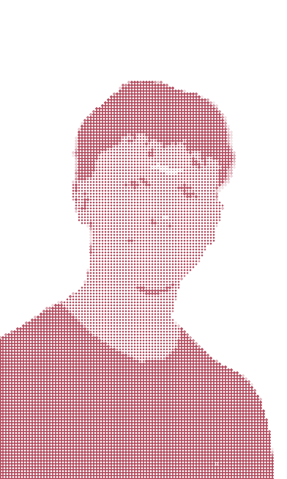

building tools that make my life easier.
I'm a student at HTL Leonding studying IT & Media Technology.
At school I learn Java, databases and networking. On the side I build an AI system that runs my school life — from Moodle sync to voice assistant to face recognition.
I've built the same school planner three times — as a web app, a native SwiftUI app, a CLI tool. Each time with better architecture, each time closer to what I actually need.
When I'm not coding, I run, hit the gym, cycle or swim. Or I solve LeetCode puzzles — for fun.
I like building things that solve a real problem. Local AI isn't a gimmick — it's a tool.
Local LLMs as real tools — voice assistant, smart scheduling, face recognition. Everything runs on my machine.
SwiftUI apps in the Apple ecosystem. From AI-curated news feeds to school planning tools.
React, vanilla HTML/CSS/JS, Three.js. From AI-driven 3D simulations to framework-free client sites.
OpenCV, Haar Cascades, face recognition. Learning computer vision step by step, from scratch.